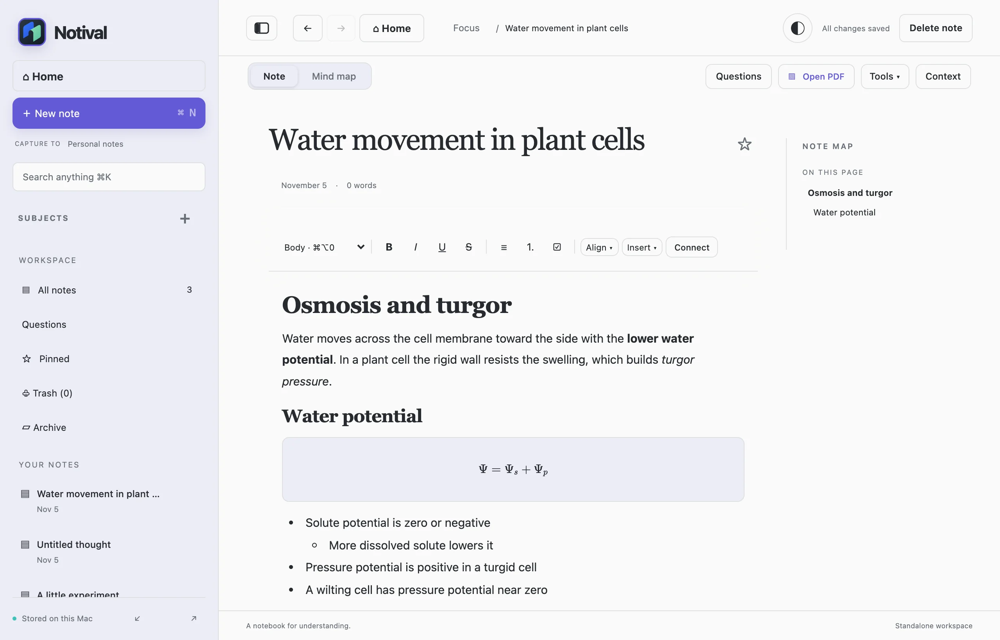
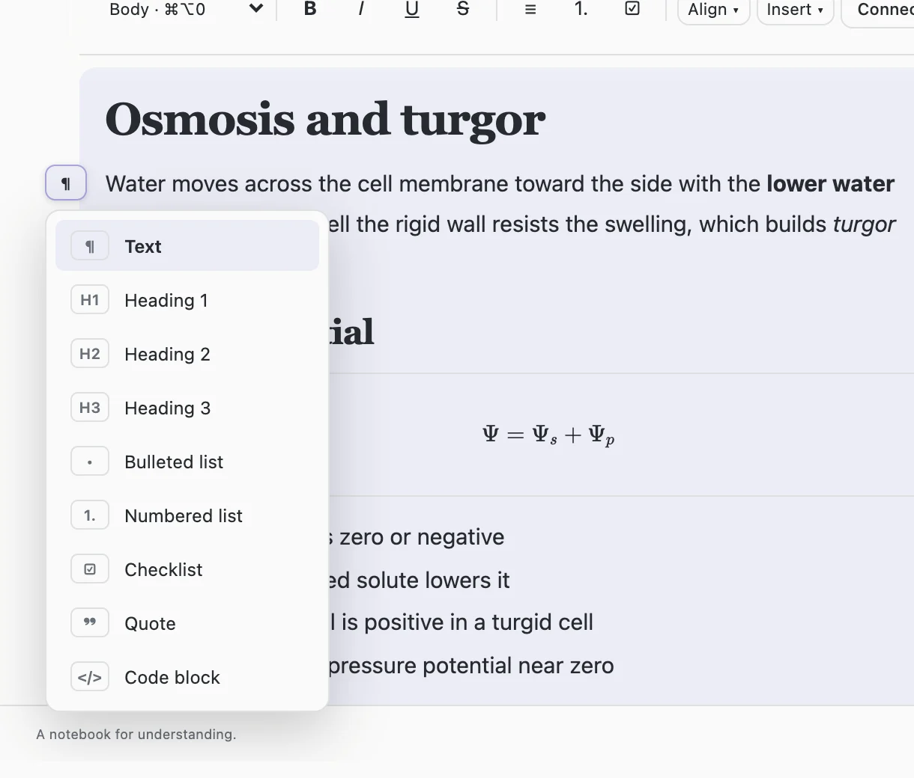
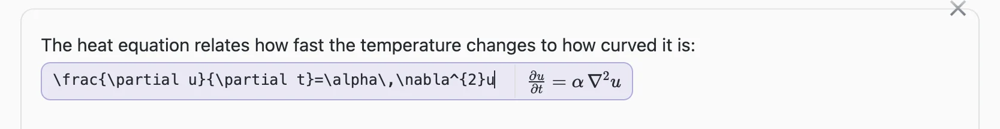
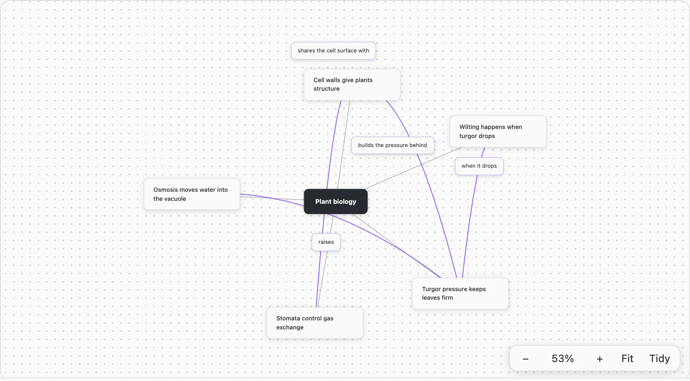
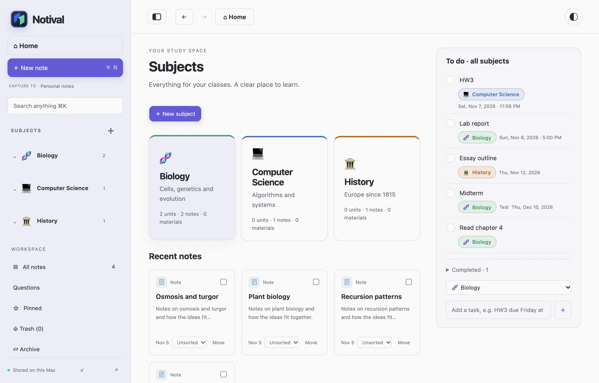

A local notebook for understanding what you study.
A little space to think.
Notival is a study notebook for your Mac. Take notes, connect ideas into a mind map, and work beside your PDFs. Your notes stay on your computer.

A local notebook for understanding what you study.
Notival is a study notebook for your Mac. Take notes, connect ideas into a mind map, and work beside your PDFs. Your notes stay on your computer.

Hover any line. The handle beside it names what it is.
Works inline and on its own line.
Start typing and keep going. A heading, a list, a table or an equation is a few keystrokes away, and Tab nests a list as deep as you need.
When you change your mind about a line, use the small handle in the margin to turn it into a heading, a checklist, a quote or a code block. You never have to retype it.
Equations are written in LaTeX and drawn as you type, right beside the source, so you can fix a typo before you press Enter.


Swipe sideways with two fingers to flip between the note and its map.
Pick any two lines of a note and describe how they relate. Notival builds a mind map from the connections you make. The note's title sits at the center, and every connection ties back to it.
The description can be as long as you like, with lists, links and equations. Pinch to zoom, drag to move around, and select several boxes with ⌘-click to delete them together.

Reading an equation happens on your Mac. It needs a one-time download of about 500 MB.
Open a PDF next to your note. Select a passage to quote it, add a thought linked to the page, or draw a box around a figure and it lands in your note as a picture, resizable and ready to type below.
Box an equation and Notival reads it as LaTeX. You get the live equation editor with the result filled in, so you can correct a character and accept it. Long equations read best a part at a time.
Type “HW3 due Friday at 11:59pm” and the date is understood.
Group notes, files and test packs into subjects and units. The home page gathers the to-do items from every subject into one list, each labeled with the subject it belongs to, so nothing hides inside a class you forgot to open.
Finished items drop to the bottom, and you can archive or delete several notes at once. Connect Canvas and its assignments arrive with their due dates, paired to the right subject.

The only download is the optional equation model.
Notival saves to a single file in your Library folder, with the previous version kept beside it. There is no account, no server and no tracking. Export a backup whenever you like, and import it on another Mac.
It runs as a native macOS app on the system's own web view, so there is no browser to install and nothing running in the background.
You need macOS 13 or later.
Notival is built from source, so there is nothing to download or approve. It takes about a minute.
If you have never built an app on this Mac, run this once and follow the prompt.
xcode-select --installgit clone https://github.com/JackF-22/notival.git
cd notivalzsh scripts/build.sh
open dist/Notival.appDrag dist/Notival.app into Applications if you want to keep it. Quit Notival before replacing an older copy.
Choose File, then Set Up Equation Recognition, or trace an equation and accept the offer. Notival downloads about 500 MB once and then works offline.
It needs Python 3.10 to 3.13. If you have none, install one first:
brew install python@3.12You can also run scripts/setup-latex-ocr.sh yourself. To remove it later, delete ~/Library/Application Support/Margin/latex-ocr.